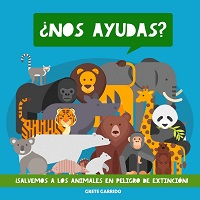
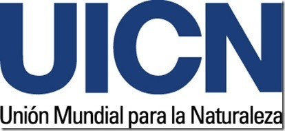
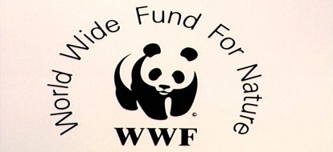
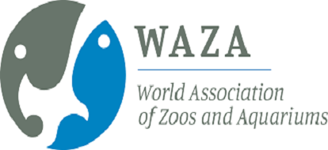
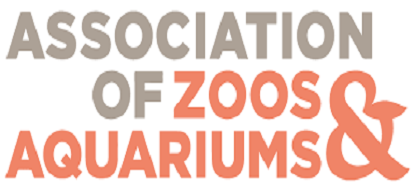
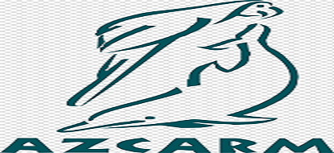

Organizaciones que ayudan a los animales en peligro de extinción

1- Unión Internacional para la Conservación de la Naturaleza (UICN)
Comenzamos con la organización madre, la asociación internacional más antigua al cuidado de los animales, la UICN. Fundada en 1948, tiene por objetivo reunir en un mismo espacio a grupos y asociaciones con los respectivos gobiernos del país en el que trabajen.
Desde sus inicios, la Unión Internacional para la Conservación decidió trabajar únicamente con asociaciones ya establecidas; digamos que ellos son el medio que enlaza la parte de gobierno con grupos a favor de causas como protección animal, conservación de especies y hace poco comenzaron a incluir grupos en pro del desarrollo sustentable.
Básicamente, la Unión Internacional para la Conservación de la Naturaleza deja a las asociaciones trabajar con la sociedad en general para ellos dedicarse completamente a ganarse a los “peces gordos”, el gobierno.
Pasaron diez años desde su fundación para que existieran organizaciones que los sustentaran y fue así como nació nuestra siguiente organización.
2- World Wide Fund for Nature (WWF)

El Fondo Mundial para la Naturaleza, por sus siglas en inglés WWF. Seguro has visto en más de una ocasión al panda que representa a esta grandísima ONG.
Todo empezó en 1960 cuando un joven y adinerado: Julian Kuxlie viajó por África, notando la desmedida caza de animales para el cuidado de la siembra, para la venta de cuernos de rinoceronte o por el marfil de los elefantes.
Un escenario como aquel no podía ser ignorado y al regreso a su natal Suiza decidió comenzar un movimiento en pro del cuidado de los animales. Así, en 1961 el WWF se fundó como una organización sin fines de lucro que trabajaría por la conservación de las especies animales. (WWF México, 2017)
Luego de 58 años de árduo trabajo, el Fondo Mundial se ha posicionado como la organización más importante para la conservación de animales.
En México, la organización se acercó en 1968 para un estudio sobre el lobo gris mexicano; sin embargo, fue hasta 1990 cuando se estableció una oficina de trabajo en el estado con mayor diversidad de especies: Oaxaca. Para 1993 crearon el Fondo Mexicano para la Conservación de la Naturaleza: una joya hecha con capital privado donde ahora, con poco más de 30 millones de dólares (WWF México, 2017), se convierte en la mayor inversión para la conservación de especies en latinoamérica.
3- World Association of Zoos and Aquariums (WAZA)

La WAZA es una de las asociaciones más importantes en el mundo de la conservación de las especies. Con poco más de 6 décadas de existencia, la asociación nace en 1946 al notar la falta de regulación en jardines zoológicos.
Como platicamos en La conservación de las especies a través de la aventura, la evolución de los centros de conservación ha sido crucial para la preservación de las especies, más allá de tener criaturas en exhibición y precisamente la WAZA ha sido uno de los principales motores para propiciar dichos cambios.
Desde su fundación, se planteó que a través de la asociación, se regularía el funcionamiento “construyendo enfoques cooperativos que permitan resolver necesidades comunes, compartir información y conocimiento” (WAZA, 2018)
Actualmente, la organización es la principal red de contacto entre centros de conservación para investigación, intercambio de especies y principalmente para el desarrollo de programas de reproducción, que consiste en la realización de estudios entre especies en cautiverio -en toditas partes del mundo- para determinar qué parejas de animalitos completarán naturalmente un ritual de apareamiento.
4- Asociación de Zoológicos y Acuarios (Association of Zoos and Aquariums AZA)

La AZA nace en 1997 con el mismo objetivo, proteger y conservar la vida de los seres vivos. 230 zoológicos y acuarios son parte de esta asociación y según sus cifras, estas instituciones representan más de 183 millones de visitas diarias a recintos de protección animal.
La asociación trabaja únicamente con dichos centros de conservación a través de planes de educación, planes de reproducción animal, e incluso planes de desarrollo profesional para los colaboradores de zoológicos y acuarios.
Según datos de la organización, cada año invierten $160 millones de dólares que dan pie a 2,600 proyectos alrededor de 130 países, imagínate, casi todo el mundo. Uno de sus programas más importantes es “SAFE species” que trabaja arduamente por la conservación de animales en peligro de extinción.
El trabajo de la AZA impacta directamente en las instituciones afiliadas, quienes a su vez impactarán en la vida de estas 183 millones de visitas diarias y seguramente tu visita a Zoofari sumará al apoyo a la conservación de las especies.
5- Asociación de Zoológicos, Criaderos y Acuarios de México AC (AZCARM)

La AZA nace en 1997 con el mismo objetivo, proteger y conservar la vida de los seres vivos. 230 zoológicos y acuarios son parte de esta asociación y según sus cifras, estas instituciones representan más de 183 millones de visitas diarias a recintos de protección animal.
La asociación trabaja únicamente con dichos centros de conservación a través de planes de educación, planes de reproducción animal, e incluso planes de desarrollo profesional para los colaboradores de zoológicos y acuarios.
Según datos de la organización, cada año invierten $160 millones de dólares que dan pie a 2,600 proyectos alrededor de 130 países, imagínate, casi todo el mundo. Uno de sus programas más importantes es “SAFE species” que trabaja arduamente por la conservación de animales en peligro de extinción.
El trabajo de la AZA impacta directamente en las instituciones afiliadas, quienes a su vez impactarán en la vida de estas 183 millones de visitas diarias y seguramente tu visita a Zoofari sumará al apoyo a la conservación de las especies.